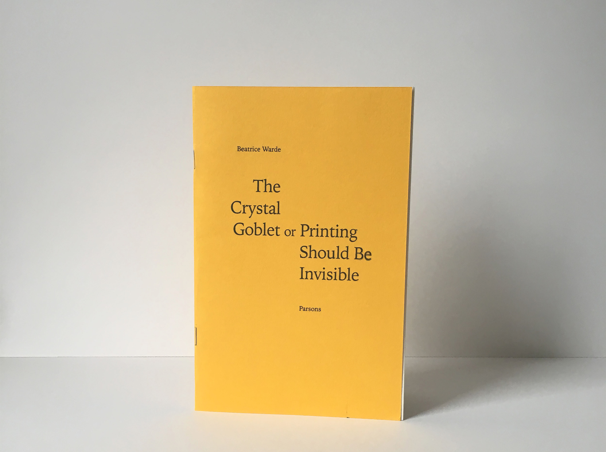
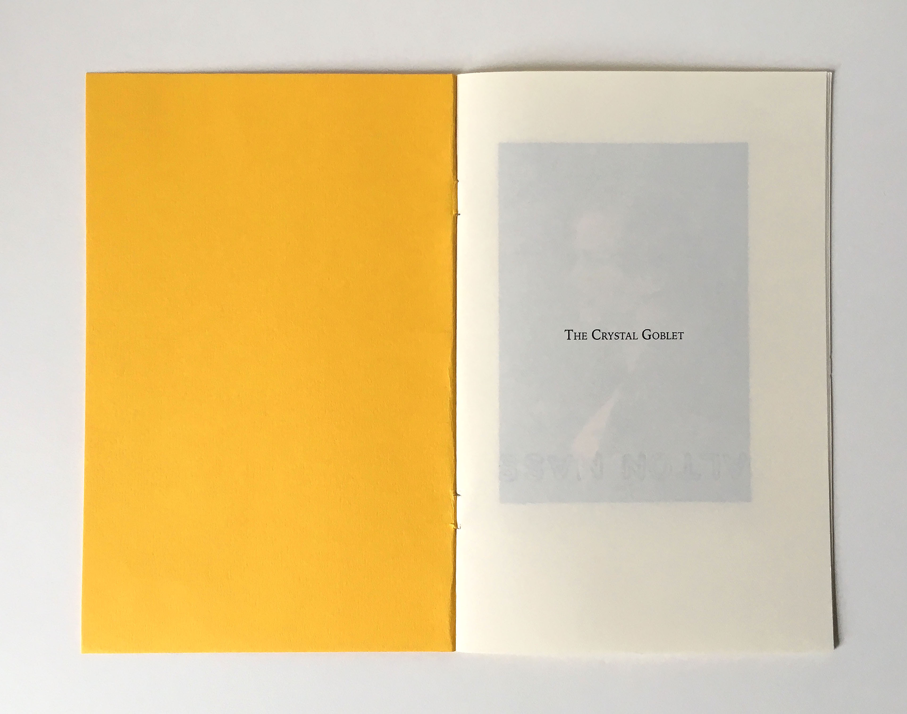
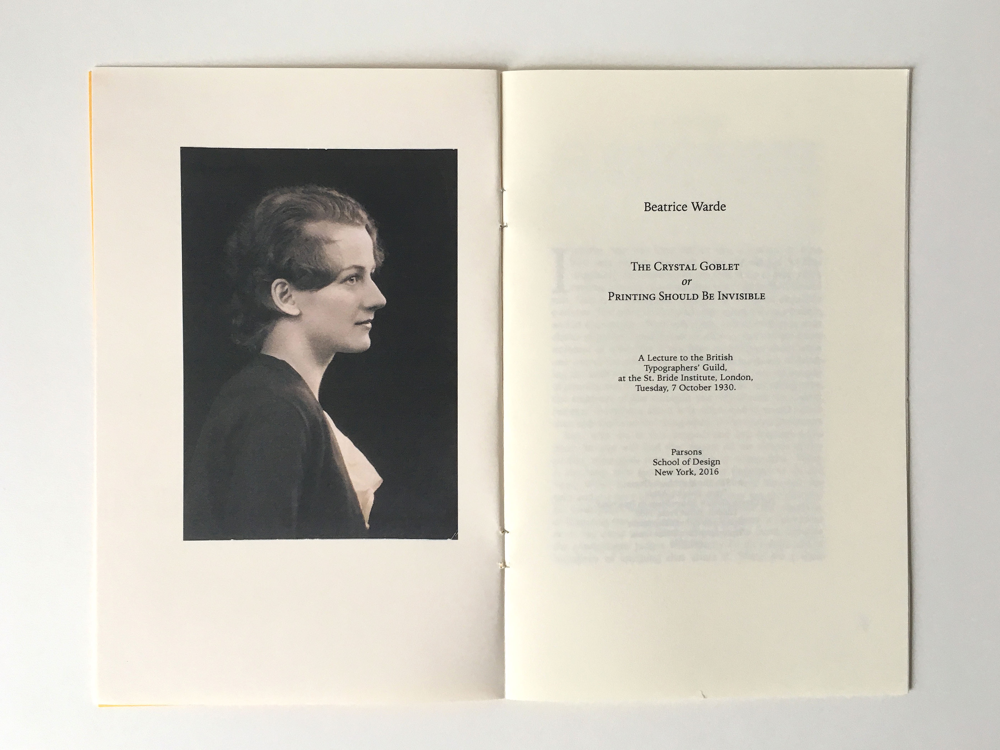
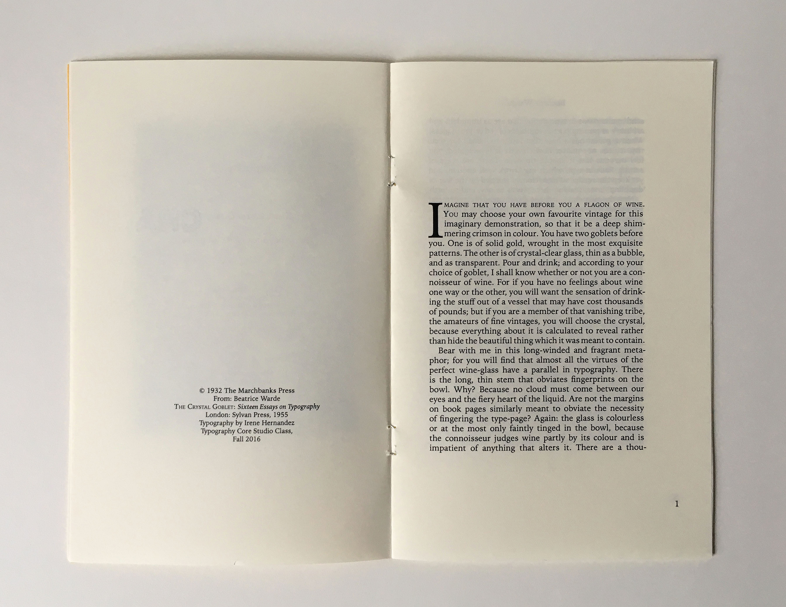
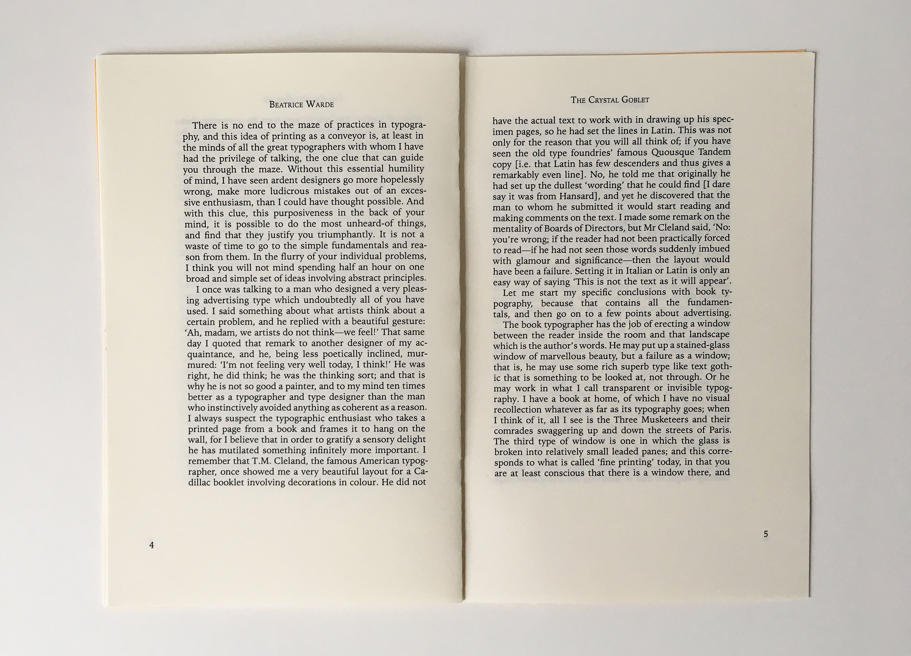

The Crystal Goblet





For this project the instruction was to place the text, "The Crystal Goblet" by Beatrice Warde in a book form. I placed the text using the van der graaf grid, and Iowan Old Style as my choice of font. I made decisions for the placement of running heads, and folios.